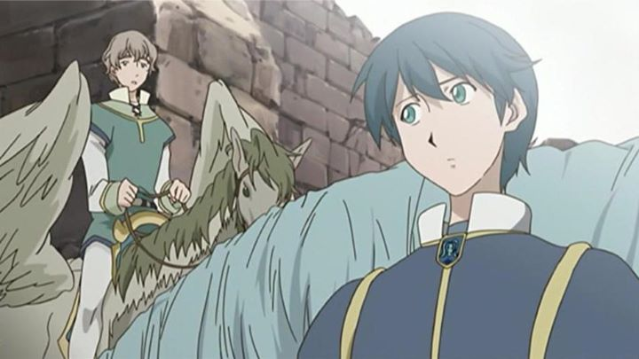

In the mid-2000's, anime studio Gonzo created three original interpretations on three separate famous works. The first was "Samurai 7" (2004). The second was "Gankutsuou - The Count of Monte Cristo" (2004). The final one, sometime later, was "Romeo x Juliet" (2007), based on the bard's famous romantic tragedy. My impression was that an issue with writing or budget was more prevalent with this last of the trilogy. And like the other shows, you can expect many creative liberties, while still retaining the themes and soul of the original source. If you were told "Romeo & Juliet: The Anime," what would you imagine? Your first thoughts probably aren't far off from what "Romeo x Juliet" turned out to be. Set in an alternate fantasy world (in "Neo Verona" instead of just "Verona"), a world of knights and winged-horses, we have two families: Montague and Capulet. The Montague family murders the entire Capulet family to take control of the kingdom, with only a young girl named Juliet surviving with the help of loyal family servants. Years later, Juliet is turning 16, and is still in hiding from the Montague family and their forces, pretending to be a boy with a short haircut, and doubling as a masked vigilante for justice, like Zorro. But at the age of 16, the survivors plan for Juliet to finally take back power as the the rightful heir. And when Juliet by chance meets Romeo, initially seeming crude, and deserving of hatred for being a son of the Monague house... well, the two slowly begin to fall in love, as Romeo learns more about Juliet and agrees to help her.It's a decidely more complex story than what you are familiar with. In fact, there are several references to Shakespeare's other plays interwoven in the story, either through events or character names. Even the bard himself, named only "William" in the show, appears as a side character. Frankly, the entire series felt a bit like a complex JRPG video game, in both good ways and bad. But mostly for good: the romance is passionate and emotional. Higher stakes makes it easier to follow along. And making Juliet the true lead, a hero instead of a forelorn damsel, is a fun modernization. The audio is mostly outstanding with "Romeo x Juliet." The music was compsed by Hitoshi Sakimoto, a famous video game composer for games including the Final Fantasy series (again, only encouraging that this would have made an excellent RPG). The opening is a Japanese version of the song "You Raise Me Up," an odd choice, but the familiarity of a beautiful song will bring tears as you hear it later in the series. Funimation's English dub is really good, taking their own liberties with the translation to add further references and styles from Shakespeare's plays, and providing effective emotion as required, only lacking due to weaknesses in the characters themselves. Really, I can't imagine watching a Shakespeare play in anything by English, even if it is an anime. As for the visuals... again, a little more money might have improved things. I even caught one moment when a character's tongue wasn't colored-in properly for one shot. Otherwise, character designs are stylized and colorful, and still look effective today, even if the faces tend to be a bit rounder than ideal. Animation is best during action scenes, but even then is limited in frames, using style over quality. Generally, it's a solid effort for a fantasy series."Romeo x Juliet" is an inspired adaptation, even if it does seem to only do as expected for an anime-retelling. I do think the series deserves a revisit, perhaps as a video game (how many times do I need to hint at it?). Even if you already know how the story ends, it's likely this show takes the story in places you didn't see in any other adaptation of the source material. Shakespeare fans will have a ball. It makes one wonder how other classic stories would translate to anime...
- "Ani" More reviews can be found at : https://2danicritic.github.io/ Previous review: review_Rokka_-_Braves_of_the_Six_Flowers Next review: review_Ruben_Brandt_-_Collector